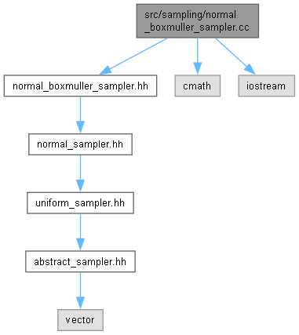

normal_boxmuller_sampler.cc File Reference
Implements the NormalBoxMullerSampler class. More...
Include dependency graph for normal_boxmuller_sampler.cc:

Detailed Description
Implements the NormalBoxMullerSampler class.
Contains the implementation of the Box-Muller transform for generating normal-distributed random samples.
Generated by